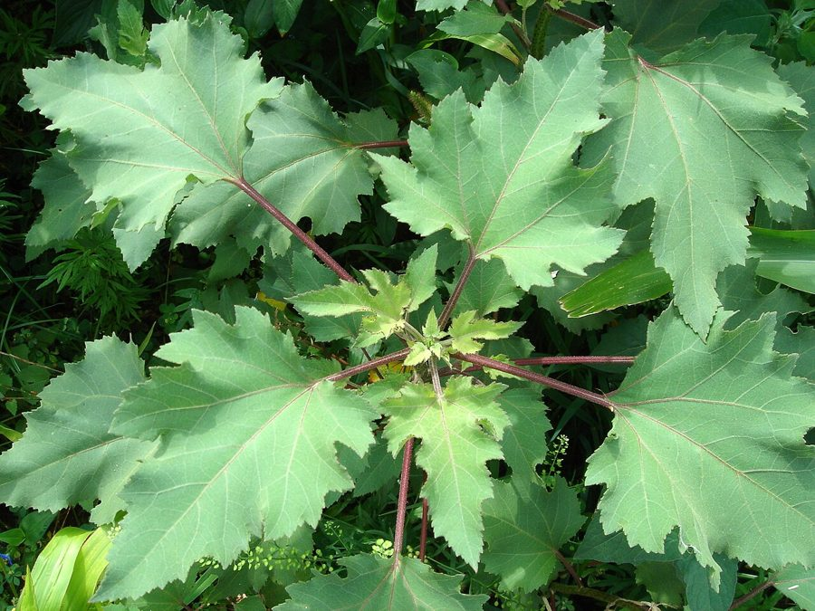

छोटा गोखरूCocklebur
Xanthium strumarium · Asteraceae · FLR-0209

- Scientific name वैज्ञानिक नाम
- Xanthium strumarium L.
- Family कुल
- Asteraceae
- Hindi हिंदी
- छोटा गोखरू / बनोकड़ा
- Local names स्थानीय नाम
- chhota gokhru, chota gokhru, banokda, banokra, cocklebur
- Status here यहाँ की स्थिति
- naturalized
- Movement आवागमन
- Resident, here all year
- IUCN IUCN
- not evaluated
- Review समीक्षा
- audited and independently read
When to look कब देखें
Expected mainly in June, July, August, September, October, November. मुख्यतः जून, जुलाई, अगस्त, सितंबर, अक्टूबर, नवंबर में अपेक्षित।
Uses and possibilities उपयोग और संभावनाएँ
“Traditional medicine” means a documented traditional use, not a claim that it works. Nothing on this page is medical advice.
Drawn from the documented uses in the profile below, where each is labelled traditional, current or a research lead. All uses →
Tell it apart from इनसे अलग पहचानें
छोटा गोखरू / Cocklebur
Xanthium strumarium L. — Asteraceae
छोटा गोखरू (बनोकड़ा, घोड़े का काँटा) — गरीब इलाकों में एक खतरनाक खरपतवार, विशेषकर जहाँ गाय-भैंस चरते हैं। हरे अंकुर और तरुण बीज पशुओं के लिए विषैले होते हैं। पत्तियाँ तिकोनी, कोमल, दाँतेदार। फल काँटेदार, गोल्फ की गेंद जैसे, डंडियों से जुड़े, कपड़ों और जानवरों के बालों में चिपकते हैं। लेकिन इसके बीज का तेल पारंपरिक दवाइयों में खाज-खुजली, जलन और सूजन के लिए मिलाया जाता है।
Quick Identification त्वरित पहचान
| Feature | Description |
|---|---|
| Height & Habit | Erect, robust annual herb, 30–120 cm, stems grooved |
| Leaves | Alternate, 3-lobed or simple, 4–12 cm, coarsely toothed, rough surface |
| Flowers | Inconspicuous green, tiny, clustered; male and female separate on same plant |
| Fruits | Distinctive, 1.5–2.5 cm, green becoming brownish, oval, covered with hooked spines (resembles a chestnut burr) |
| Seeds | Two per fruit, grey-brown, flattened |
| Root | Strong taproot penetrating 30–40 cm |
Field tip: Look for a bushy weed with 3-lobed or simple coarsely-toothed leaves and distinctive round, spiny fruits that stick instantly to clothing, animal fur, and each other. Young seedlings are smooth and easily identified by the 3-lobed cotyledons. Hazard: Seedlings and young fruit are toxic to cattle and buffalo — livestock death has been documented from eating early-stage material.
Morphology आकारिकी
| Measurement | Range |
|---|---|
| Plant height | 30–120 cm |
| Leaf length | 4–12 cm |
| Leaf width | 3–10 cm |
| Fruit length | 1.5–2.5 cm |
| Fruit width | 0.8–1.5 cm |
| Spine length | 3–6 mm |
Habit: Erect annual herb; 30–120 cm; stems angular, grooved, hairy or glabrous, greenish or reddish.
Leaves: Alternate; broadly ovate to 3-lobed; 4–12 × 3–10 cm; coarsely serrate-dentate; rough-hairy on both surfaces; apex acute; base cuneate or truncate. Stipules absent.
Inflorescence: Monoecious (separate male and female flowers on same plant). Male flowers in terminal spikes; female flowers solitary or paired in axils.
Flowers: Tiny, greenish; petals none; male flowers with 5 sepals and many stamens; female flowers with 2 styles in a fused bract.
Fruit (burr): An involucre (fused bracts) enclosing the fruits, the whole structure 1.5–2.5 cm long, ovoid to ellipsoid, greenish becoming tan, covered densely with hooked spines 3–6 mm long; at maturity, the burr splits into two one-seeded chambers. The hooked spines engage instantly with wool, fur, and fabric.
Seeds: One per chamber, grey to brown, flattened, 8–12 mm long; hard seed coat.
हिंदी: पत्ती तिकोनी या सरल, खुरदरी, दाँतेदार। फूल छोटे, हरे, अदृश्य। फल काँटेदार गोल गेंद, कपड़े से चिपकते हैं।
Behaviour & Ecology व्यवहार और पारिस्थितिकी
Xanthium strumarium is an annual pioneer weed of moist, disturbed soils and wetland margins. It germinates after monsoon rains and reaches flowering size in 8–12 weeks. The plant is highly drought-tolerant once established but prefers moist to wet habitats. Seeds are dispersed by water (buoyant burrs float and lodge downstream) and by adhesion to animal fur and clothing (extreme dispersal efficiency).
Livestock toxicity: The seedlings and young fruit are poisonous to cattle, buffalo, and sheep. The toxic agent is a sesquiterpene lactone compound; poisoning causes digestive upset, tremor, and in severe cases, death. Livestock deaths from cocklebur have been recorded across North India. Mature fruits are less toxic, though still not palatable. Goats appear more resistant than cattle.
No pollinators are recorded; flowers are wind-pollinated. The plant is avoided by most herbivores due to leaf hairiness and bitterness. In eastern UP, cocklebur occurs on grazing margins and wetland edges where livestock concentrates.
हिंदी: गीली ज़मीन पर उगता है। पशु के लिए जहरीला। गाय-भैंस की मौत भी इससे होती है। फल पानी में तैरते हैं।
Life Cycle / Phenology जीवन चक्र
| Month / Season | Event |
|---|---|
| June–July | Seed germination; seedling emergence with monsoon onset; SEEDLINGS HIGHLY TOXIC to livestock |
| July–August | Rapid vegetative growth; dense leaf growth |
| August–September | Flower buds initiate; male flower spikes emerge |
| September–October | Female fruit development; fruit spines harden; young fruit TOXIC |
| October–November | Fruit maturation; burr browning; seed hardening; dispersal begins |
| November–December | Fruit drop and dispersal; seed bank accumulation; plant decline |
| January–March | Plant death; burrs persist in field; late-dispersing burrs still viable |
हिंदी: जून में अंकुरण — पशु को खतरा। अगस्त-सितंबर में फूल। नवंबर में बीज और फल। दिसंबर-जनवरी में मर जाता है।
Agricultural / Human Relevance कृषि और मानव संबंध
Livestock toxicity — a major hazard: The seedlings and young fruits of Xanthium strumarium contain carboxyatractylogenic glycoside and related sesquiterpene lactones. Cattle are highly susceptible; a single seedling or young fruit can cause severe poisoning. Symptoms include anorexia, vomiting (in species capable of it), abdominal pain, and in severe cases, hypoglycemia and death within 2–3 days. Buffalo and sheep are also susceptible, though sheep are somewhat more resistant. Toxicity decreases as fruits mature and dry, but caution remains warranted.
Prevention: Fields known to have cocklebur should be inspected in late June after the monsoon emergence. Seedlings must be uprooted before livestock access the field. Fields should not be used for grazing until fruit maturity (November) when toxicity diminishes. Young plants are easily hand-pulled.
Traditional use: The mature fruit and seeds are used in folk and traditional medicine for treating skin conditions (eczema, ringworm) and as a mild laxative. The oil from seeds is occasionally used for treating inflammatory skin conditions. These uses are minority and not widespread in eastern UP.
Weed status: A serious weed in irrigated fields and canal margins; particularly problematic in pastures and grazing areas. The burrs contaminate wool and make harvested crops difficult to clean. No herbicide resistance has been recorded, but management is primarily by early manual removal of seedlings.
Expected Locally स्थानीय रूप से अपेक्षित
Not a field record. Written from published accounts for eastern Uttar Pradesh. No confirmed local sighting yet — if you have seen it, that is what the atlas needs.
अभी तक स्थानीय पुष्टि नहीं। यह विवरण प्रकाशित स्रोतों से है, किसी अवलोकन से नहीं।
Cocklebur is expected on canal margins, wetland edges, and grazing areas throughout Basti district during the monsoon and post-monsoon (June to November). Any suspected poisoning of livestock by cocklebur should be reported immediately. Fields should be checked in July after monsoon rains for early seedlings. Canal banks and moist depressions are places worth checking. The distinctive 3-lobed leaves and later the spiny burrs are easily recognized. The first local record would be a photograph with date and location, sent to the atlas.
Distribution वितरण
Global range: Native to North America; widely naturalized in warm temperate and tropical regions worldwide; invasive in many areas.
In India: Widespread throughout the Indo-Gangetic plain and Deccan; recorded from sea level to 1,800 m; particularly abundant in irrigated regions.
In Uttar Pradesh: Common across agricultural districts, especially in canal command areas.
In Basti district / eastern UP: Expected on canal margins and wetland edges; not yet confirmed by the project; should be reported if encountered in grazing areas.
Research Questions शोध प्रश्न
Anyone can investigate these | कोई भी इन प्रश्नों की जाँच कर सकता है
- What is the local incidence of livestock poisoning by cocklebur seedlings in your area? / आपके क्षेत्र में छोटा गोखरू से पशु मरते हैं? — Interview 5–10 farmers and herders in wet-area villages; document any cases.
- At what plant stage (seedling vs. young fruit vs. mature fruit) is cocklebur toxicity to cattle greatest? — Consult veterinary records or expert opinion; document stages.
- How long do buried cocklebur seeds remain viable in field soil? — Bury seeds at various depths; excavate after 3, 6, 12 months; test germination.
- Does livestock avoid grazing on cocklebur-infested pastures before poisoning occurs, or do they eat the plant indiscriminately? — Observe grazing behaviour on a field with scattered cocklebur plants.
- Is there traditional knowledge of detecting cocklebur poisoning in cattle, and what is the folk remedy (if any)? / छोटा गोखरू के विषैलापन का पारंपरिक इलाज क्या है? — Interview local herders and healers.
Similar Species मिलती-जुलती प्रजातियाँ
| Species | How to tell apart | हिंदी |
|---|---|---|
| Xanthium echinatum (Indian Cocklebur) | Fruits smaller (1–1.5 cm), with fewer, shorter spines; leaf lobing less pronounced | फल छोटे, काँटे कम |
| Prickly Chaff Flower (Achyranthes aspera) | Opposite leaves, not alternate; flower spikes not burrs; seeds have 2 bracteoles, not a spiny burr | पत्तियाँ आमने-सामने, स्पाइक में फूल |
| Acanthospermum hispidum (Bristly Starbur) | Smaller fruits (0.5–0.8 cm), with fewer, less hooked spines; densely bristly | फल बहुत छोटे |
Field rule: An erect annual with alternate, 3-lobed or simple, rough, coarsely-toothed leaves, and distinctive spiny round burrs (1.5–2.5 cm) that stick firmly to clothing and fur, is cocklebur. Young seedlings and fruit are toxic to cattle.
Taxonomy & Classification वर्गीकरण
Original description. Carl Linnaeus described Xanthium strumarium in 1753 in Species Plantarum. The genus name Xanthium is derived from the Greek xanthos (yellow), referring to the colour of some specimens. The specific name strumarium refers to the goitre (struma), for which the plant was traditionally used in folk medicine.
Subspecies. Several ecotypes and forms exist globally; Xanthium strumarium subsp. strumarium is the widespread form in India.
Family and order placement. Placed in the order Asterales, family Asteraceae (daisy family). Xanthium is a small genus of about 25 species, most in tropical and subtropical regions.
Phylogenetic notes. Xanthium shares the monoecious (separate male/female) flower pattern with Cannabis and Humulus. The genus is distinct within Asteraceae in having specialized burr fruits for zoochorous dispersal.
IUCN status rationale. Not evaluated. Widespread and abundant; invasive in some regions; no conservation concerns.
Photo Gallery फोटो गैलरी
No photos yet — add field photos to media/species/chhota_gokhru/ and run node scripts/sync_photos.js.
Photos needed आवश्यक फोटो
- [ ] Seedling plant (नन्हा पौधा)
- [ ] 3-lobed leaf close-up (तिकोनी पत्ती)
- [ ] Spiny fruit burr (फल, काँटे दिखाते)
- [ ] Burr stuck to fabric or fur (कपड़े पर चिपका फल)
References संदर्भ
- Linnaeus, C. (1753). Species Plantarum, Vol. 2, p. 987. Laurentii Salvii, Holmiae.
- Hooker, J.D. (1881). Flora of British India, Vol. 3. L. Reeve & Co., London.
- Chopra, R.N., Nayar, S.L. & Chopra, I.C. (1956). Glossary of Indian Medicinal Plants. CSIR, New Delhi.
- Bhargava, S.C. & Raghunath, K. (1970). Xanthium — agricultural weed and toxic plant. Indian Journal of Veterinary Sciences 5: 203–210.
- Botanical Survey of India. Flora of Uttar Pradesh. BSI, Kolkata.
- GBIF Occurrence Data — Xanthium strumarium, India (2015–2026).
Source file: species/flora/weeds/chhota_gokhru.md